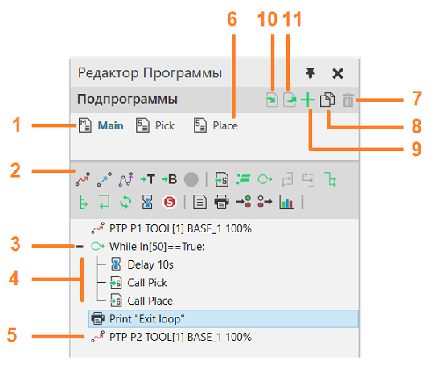
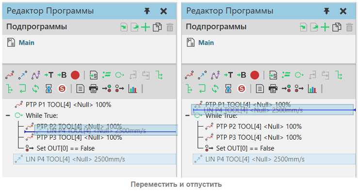
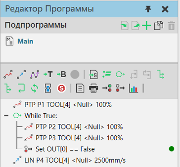

Панель Редактор Программы позволяет просматривать и редактировать программу робота, предварительно просматривать движения и программировать другие типы компонентов с помощью операторов RSL.

1. |
Основная программа |
2. |
Панель инструментов операторов |
3. |
Операторы условия |
4. |
Оператор вложенности |
5. |
Оператор движения |
6. |
Подпрограмма |
7. |
Удалить выбранную подпрограмму |
8. |
Дублировать выбранную подпрограмму |
9. |
Добавить подпрограмму |
10. |
Импорт программы |
11. |
Экспорт программы |

Панель инструментов Операторов
Панель инструментов Операторов отображает команды для добавления операторов RSL в программу выбранного робота в трехмерном мире.
Название |
Описание |
|---|---|
Движение от точки к точке |
Выполняет движение точка-точка в положение путем интерполяции значений соединений. |
Линейное движение |
Выполняет линейное перемещение в позицию на основе текущей конфигурации. |
Движение по траектории |
Выполняет перемещение по созданной траектории (траектория создается при выборе команды). |
Определить инструмент |
Задает свойства рамки инструмента робота. |
Определить базу |
Задает свойства базовой рамки робота. |
Обновить положение |
Обновляет свойства оператора движения для выбранной позиции робота. |
Вызов подпрограммы |
Выполняет указанную подпрограмму в программе. |
Присвоить переменной |
Присваивает значение переменной, можно использовать выражения. |
Выражение Пока |
Цикл с условием, для выполнения группы операторов в теле цикла (While). |
Прервать |
Завершает выполнение цикла (Break). |
Продолжить |
Устанавливает цикл на продолжение со следующей итерации (Continue). |
Если |
Определяет условие if-then-else для выполнения одной группы операторов, если условие истинно (True), или другой группы операторов, если условие ложно (False). |
Переключатель Случаев |
Оператор Switch-Case. В зависимости от результата в Switch выбирается выполнение ветки Case. |
Return |
Завершает выполнение программы/подпрограммы. |
Синхронизация программы |
Синхронизирует выполнение программы с другими программируемыми компонентами, используя соответствующее сообщение синхронизации. |
Задержка |
Задерживает выполнение программы на указанное время. |
Остановка |
Останавливает симуляцию. |
Комментарий |
Оставляет комментарий в программе. |
Печать |
Отправляет отзыв для печати на панели Вывод. |
Ожидать бинарный вход |
Ожидает, пока цифровой сигнал, подключенный к входу робота, не примет нужное значение. |
Установить двоичный выход |
Устанавливает значение цифрового сигнала, подключенного к выходу робота, или сигнализирует о действии в роботе. |
Установить состояние |
Устанавливает выбранное состояние статистики робота. |
Программа
Программа робота сохраняется вместе с планировкой.
Если вам нужно изменить порядок операторов в программе, перетащите оператор до или после другого оператора. Место, где вы вставляете оператор, показано линией, которая также указывает, на каком уровне вы вставляете оператор.

При запуске симуляции текущий оператор, выполняемый в программе робота, обозначается меткой справа от оператора.
